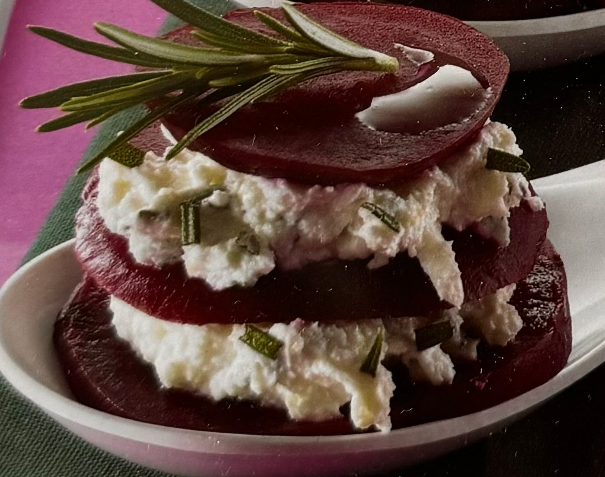

Millefeuilles betterave ricotta
Ingredients
4×
- 40 g de beurre mou
- 400 g de ricotta
- sel
- poivre
- 1 pincée d'herbes de Provence
- 4 c. à s. de miel liquide
- 2 c. à s. de vinaigre balsamique
- 4 betteraves cuites

Préparation
Étape 1
Écraser 40 g de beurre mou avec 400 g de ricotta, sel, poivre et 1 pincée d'herbes de Provence.
Étape 2
Émulsionner à la fourchette 4 c. à s. de miel liquide et 2 c. à s. de vinaigre balsamique.
Étape 3
Peler 4 betteraves cuites et les couper en fines tranches de 3-4mm.
Étape 4
Alterner betterave et fromage, finir par la betterave. Napper de sauce au miel.